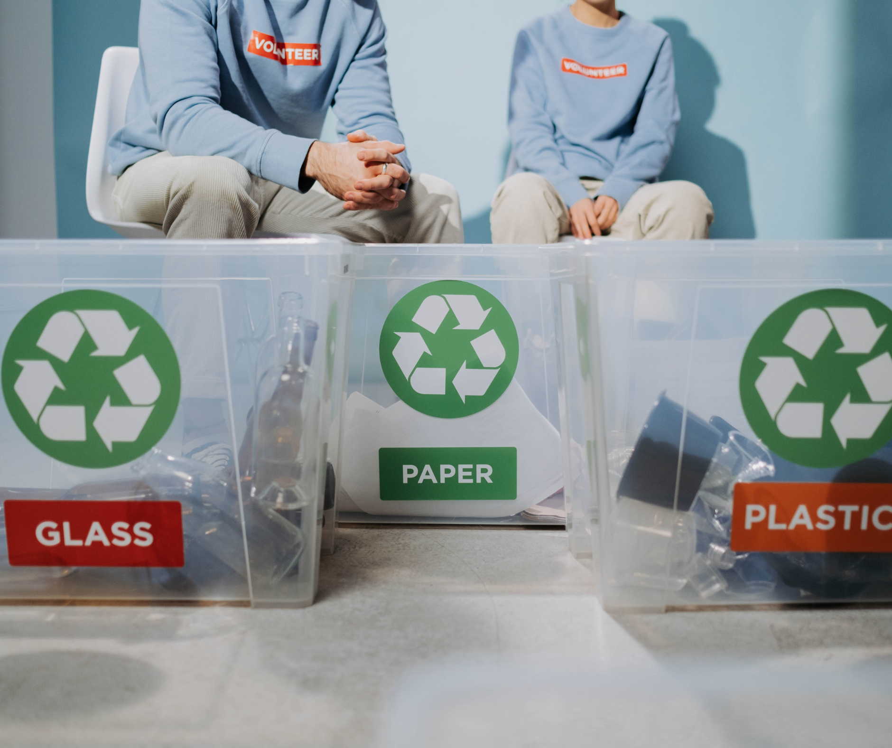

Perubahan iklim telah mepengaruhi kita dimanapun kita berada. Cuaca ekstrem yang tidak menentu makin sering terjadi, permukaan laut terus naik, dan banyak spesies menghadapi ancaman kepunahan. Secara umum, perubahan iklim adalah fenomena pemanasan global, yang dimana terjadi peningkatan gas rumah kaca pada lapisan atmosfer.
Climate Central menemukan data melalui NOAA dan NASA bahwa 2020 adalah tahun terpanas dalam sejarah perubahan iklim. Dimana hal ini mendekati level dari rekor tahun 2016. Berikut adalah data suhu permukaan bumi dalam 10 tahun terakhir menurut data dari GoodStats.
| Tahun | Derajat Celcius |
|---|---|
| 2013 | 0,68 Celcius |
| 2014 | 0,75 Celcius |
| 2015 | 0,9 Celcius |
| 2016 | 1,02 Celcius |
| 2017 | 0,92 Celcius |
| 2018 | 0,85 Celcius |
| 2019 | 0,98 Celcius |
| 2020 | 1,02 Celcius |
| 2021 | 0,85 Celcius |
| 2022 | 0,89 Celcius |
Dari data diatas kita dapat melihat pemanasan global semakin meningkat dari tahun ke tahun. Oleh karena itu, kita sebagai pelaku utama terjadinya perubahan iklim bumi, maka kita harus bertanggung jawab dalam upaya mengurangi pemanasan global.
Berikut adalah 8 cara yang bisa dilakukan untuk membantu mengatasi perubahan iklim :
- Kurangi Penggunaan Energi Listrik.
Listrik merupakan salah satu sumber panas yang menyebabkan peningkatan suhu bumi. Mengurangi penggunaan energi dengan cara mematikan peralatan listrik yang tidak digunakan, menggunakan lampu LED yang efisien energi, dan tidak menggunakan pendingin atau pemanas ruangan saat tidak diperlukan. Hal ini akan membantu mengurangi emisi gas rumah kaca dan memperkuat ekonomi yang berkelanjutan.Selain itu, konsumsi daya pada pembangkit listrik pun berkurang, sehingga panas yang dihasilkan pun menurun.
- Menanam Pohon dan Merawat Lingkungan.

Suhu Bumi yang terus meningkat dapat memengaruhi perubahan iklim dan memicu serangkaian bencana alam, krisis pangan, hingga kepunahan masal. Pohon dapat membantu menyerap karbon dioksida di sekitar lingkungan.Satu pohon bisa menyerap lebih dari 20 kg karbon dioksida per tahun, sehingga udara yang dihirup menjadi lebih bersih. Selain itu, pohon dapat membuat suasana rumah yang sebelumnya gersang menjadi lebih teduh. Menanam pohon tidak berarti hanya menanam kembali pohon di hutan yang gundul. Namun, kegiatan penghijauan bisa kita lakukan di rumah, dengan menanam lebih banyak tanaman hijau di pekarangan dan lingkungan sekitar.
- Kurangi Penggunaan Plastik Sekali Pakai.

Plastik sekali pakai adalah jenis plastik yang dirancang untuk digunakan hanya sekali dan kemudian dibuang. hal ini memberikan dampak merugikan bagi lingkungan, perubahan iklim, dam ekonomi. Kita dapat mengurangi penggunaan plastik sekali pakai dengan menggunakan barang yang reuseable atau dapat digunakan kembali, seperti mengganti kantong plastik sekali pakai dengan tas kain, membawa botol minuman, mengurangi penggunaan sedotan, dan lain-lain.
- Melakukan Daur Ulang dan Gunakan Kembali.

Daur ulang adalah proses mengumpulkan dan mengolah bahan yang seharusnya dibuang sebagai sampah dan mengubahnya menjadi produk baru yang berguna dan dapat memberikan manfaat kepada masyarakat dan lingkungan. Hal ini bertujuan untuk mengatasi penumpukan sampah yang sudah tidak terpakai. Salah satu contohnya adalah Pupuk Kompos yang digunakan sebagai tambahan nutrisi tanaman yang dapat berasal dari bahan kimia dan bahan organik(bahan sisa atau sampah organik, seperti : dedaunan, sisa sayuran, kulit buah, dan sebagainya).
- Menghemat Dalam Penggunaan Air.
Air bersih semakin langkah, gunakan lah air secara bijak saat mencuci, mandi, atau menyiram tanaman. Sekitar 70% permukaan bumi ditutupi oleh air. Namun, sebagian besar adalah air laut dan hanya 2,5% yang merupakan air bersih. Air bersih ini harus dibagi kepada 7,8 miliar manusia, lebih dari 300ribu spesies tumbuhan, 8,7 miliar hewan, hingga untuk keperluar industri dan energi. Oleh karena itu, kita perlu menggunakan air bersih secara bijak agar semua kebutuhan makhluk hidup dapat terpenuhi dan terhindar dari kekurangan air dan kekeringan.
- Penggunaan Energi Tenaga Surya.

Energi surya adalah energi yang dihasilkan dari sinar matahari atau radiasi matahari. Matahari dapat menjadi solusi energi di masa depan karena kita tidak perlu khawatir sinar matahari akan habis atau mengalami kelangkaan. Selain itu, energi surya dapat menjadi energi alternatif yang ramah lingkungan untuk mengatasi perubahan iklim dan mengurangi ketergantungan pada sumber energi fosil. Tenaga Surya dapat dimanfaatkan sebagai penghasil listrik dan panas yang ramah lingkungan karena tidak menghasilkan emisi gas rumah kaca, polusi udara, dan polusi air selama digunakan.
- Menggunakan Transportasi Yang Ramah Lingkungan.

Dapat kita ketahui bahwa kendaraan bermotor di daerah perkotaan mengalami peningkatan dari tahun ke tahun, hal ini dikarenakan jumlah penduduk yang terus bertambah. Gas yang dihasilkan dari asap kendaraan bermotor ini adalah salah satu penyebab pemanasan global, yakni karbon monoksida. Transportasi ramah lingkungan adalah metode yang digunakan untuk menciptakan transportasi yang tidak menghasilkan gas rumah kaca. Dengan menggunakan metode ini maka dapat tercipta transportasi massal yang ramah lingkungan dan berbasis energi listrik sehingga, dapat menekan jumlah kendaraan pribadi yang berada di jalan. Metode ini juga memiliki dampak positif lainnya, yaitu dapat mengurangi angka kecelakaan, mengurangi penggunaan BBM, dan menghemat biaya. Berikut adalah beberapa contoh transportasi yang ramah lingkungan :
- Mobil Listrik;
- Bus Listrik;
- MRT;
- Kendaraan Hidrogen;
- Sepeda Listrik.
- Mengurangi Penggunaan CFC (Chlorofluorocarbon).
CFC adalah suatu bahan kimia yang diproduksi untuk membuat suhu dingin yang memiliki dampak penipisan lapisan ozon. Chlorofluorocarbon merupakan gas yang paling dominan dalam dampak terjadinya pemanasan global. Hal ini menyebabkan suhu udara di Bumi semakin cepat meningkat yang pada akhirnya akan mengakibatkan gangguan dan perubahan iklim secara global. Hal yang dapat kita lakukan untuk mengurangi penggunaan CFC (Chlorofluorocarbon) adalah dengan cara mengurangi pemakaian elektronik yang dapat menimbulkan gas CFC, seperti AC dan mengurangi pemakaian produk yang terdapat gas aerosol, seperti hair spray, face mist, dry shampoo, obat pembasmi hama, pengharum ruangan semprot, dan lainnya.
Dengan memahami berbagai cara yang dapat kita lakukan untuk menghadapi perubahan iklim, kita telah mengambil langkah awal yang penting. Namun, pengetahuan saja tidak cukup, yang dibutuhkan sekarang adalah Aksi Nyata. Setiap pilihan yang kita ambil, sekecil apa pun, akan memberikan dampak terhadap masa depan Bumi. Dari menghemat listrik hingga menanam pohon, dari mengurangi sampah plastik hingga beralih ke transportasi ramah lingkungan dan berbagai kontribusi kecil dari diri kita memiliki arti.
Bumi adalah rumah kita bersama. Sudah saatnya kita bertanggung jawab atas keberlanjutannya, tidak hanya untuk kita yang hidup hari ini, tetapi juga untuk generasi yang akan datang. Mari kita rawat, lindungi, dan cintai bumi ini karena masa depannya, ada di tangan kita.